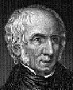

Deutsch/English << >>English only
Russian
/English << >>English /Russian
Deutsch/English << >>English
only

William Wordsworth 
1770-1850
(Уильям Вордсворт)
|
|
Scorn not the Sonnet
Сонет о Сонете
Scorn not the Sonnet; Critic, you have frowned,
Mindless ofits just honours; with this key
Shakespeare unlocked his heart; the melody
Of this small lute gave ease to Petrarch’s wound;
A thousand times this pipe did Tasso sound;
With it Camoens soothed an exile’s grief;
The Sonnet glittered a gay myrtle leaf
Amid the cypress with wich Dante crowned
His visionary brow: a glow-worm lamp,
It cheered mild Spenser, called from Faery-land
To struggle through dark ways; and when a damp
Fell round the path of Milton, in his hand
The Thing became a trumpet; whence he blew
Soul-animating strains - alas, too few!
The Rainbow
MY heart leaps up when I behold
A rainbow in the sky:
So was it when my life began;
So is it now I am a man;
So be it when I shall grow old,
Or let me die!
The Child is father of the Man;
And I could wish my days to be
Bound each to each by natural piety.
1 I heard a thousand blended notes,
2 While in a grove I sate reclined,
3 In that sweet mood when pleasant thoughts
4 Bring sad thoughts to the mind.
5 To her fair works did nature link
6 The human soul that through me ran;
7 And much it griev'd me my heart to think
8 What man has made of man.
9 Through primrose-tufts, in that sweet bower,
10 The periwinkle trail'd its wreathes;
11 And 'tis my faith that every flower
12 Enjoys the air it breathes.
13 The birds around me hopp'd and play'd:
14 Their thoughts I cannot measure,
15 But the least motion which they made,
16 It seem'd a thrill of pleasure.
17 The budding twigs spread out their fan,
18 To catch the breezy air;
19 And I must think, do all I can,
20 That there was pleasure there.
21 If I these thoughts may not prevent,
22 If such be of my creed the plan,
23 Have I not reason to lament
24 What man has made of man?
MILTON! thou shouldst be living at this hour:
England hath need of thee: she is a fen
Of stagnant waters: altar, sword, and pen,
Fireside, the heroic wealth of hall and bower,
Have forfeited their ancient English dower
Of inward happiness. We are selfish men;
O raise us up, return to us again,
And give us manners, virtue, freedom, power!
Thy soul was like a Star, and dwelt apart;
Thou hadst a voice whose sound was like the sea:
Pure as the naked heavens, majestic, free,
So didst thou travel on life’s common way,
In cheerful godliness; and yet thy heart
The lowliest duties on herself did lay.
SHE dwelt among the untrodden ways
Beside the springs of Dove,
A Maid whom there were none to praise
And very few to love:
A violet by a mossy stone
Half hidden from the eye!
Fair as a star, when only one
Is shining in the sky.
She lived unknown, and few could know
When Lucy ceased to be;
But she is in her grave, and oh,
The difference to me!
1 Ethereal minstrel! pilgrim of the sky!
2 Dost thou despise the earth where cares abound?
3 Or, while the wings aspire, are heart and eye
4 Both with thy nest upon the dewy ground?
5 Thy nest which thou canst drop into at will,
6 Those quivering wings composed, that music still!
7 Leave to the nightingale her shady wood;
8 A privacy of glorious light is thine;
9 Whence thou dost pour upon the world a flood
10 Of harmony, with instinct more divine;
11 Type of the wise who soar, but never roam;
12 True to the kindred points of Heaven and Home!
|
|
© 2000 Elena and Yacov Feldman